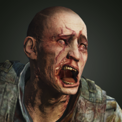
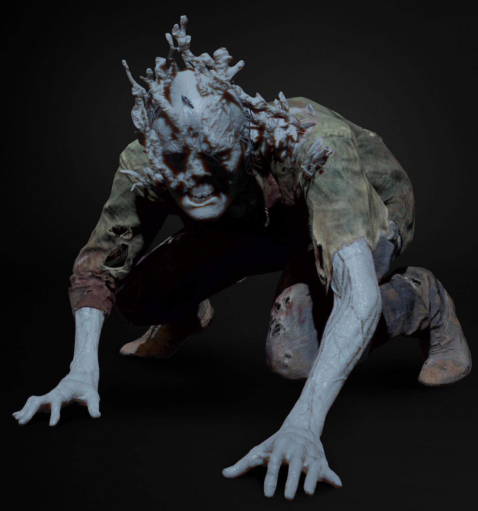
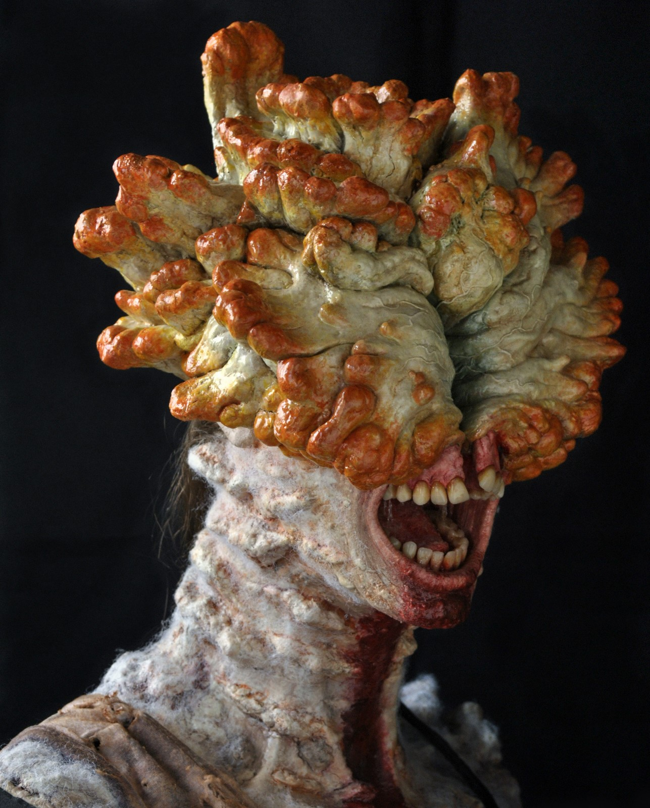
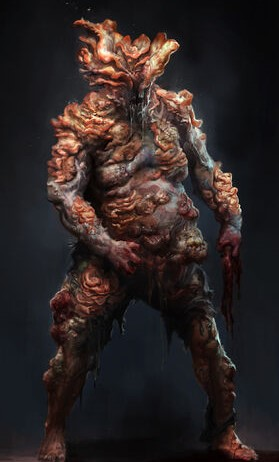
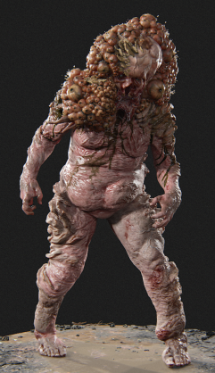
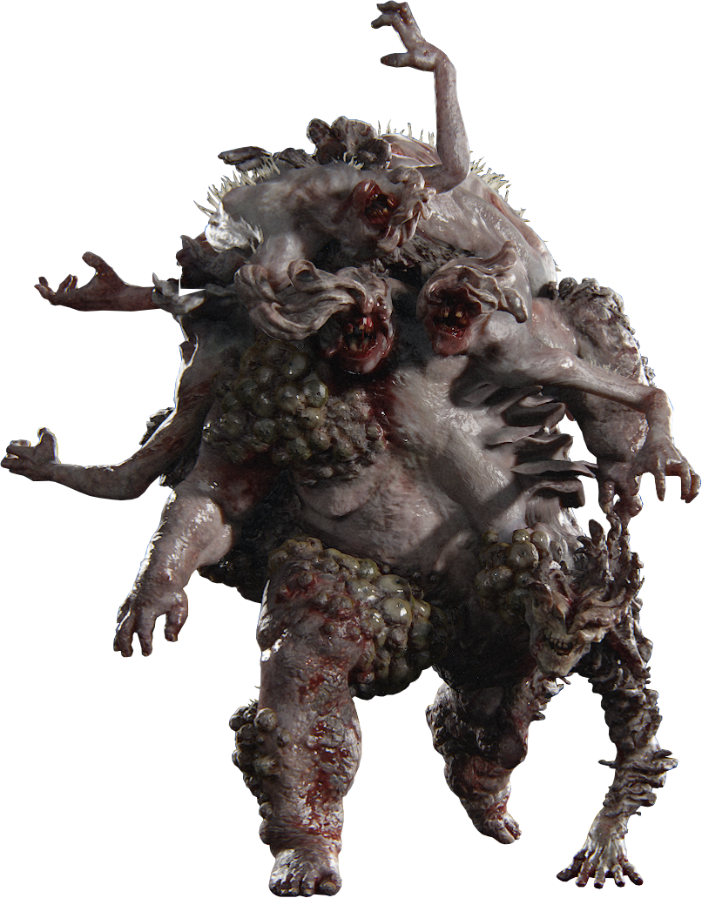
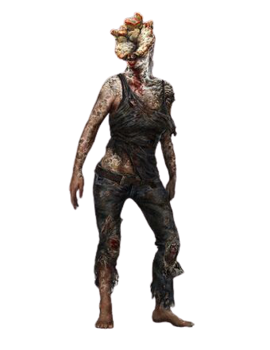

|
 Runner Stade 1 |
 Stalker Stade 2 |
 Clicker Stade 3 |
|
 Bloater Stade 4 |
 Shambler Stade 5 (ou autre forme d'évolution du 4?) |
 Rat king |
Le champignon du Cordyceps tiendrait son origine dans des cultures agricoles d’Amérique du Nord, plusieurs revues de journaux dans le prologue du premier jeu appuient cette affirmation. Le champignon infectant normalement le cerveau de certains insectes aurait muté infectant ainsi aussi le cerveau humain. Le cordyceps, provoquant une croissance du mycélium dans les tissus du cerveau, détruit les cellules cérébrales. Cela a pour cause d'effacer la mémoire, modifiant leurs instincts. Les personnes infectées ne suivent plus aucun but mis à part celui de propager leurs spores à d'autres personnes. Dans certains cas, l'infection peut tuer l'hôte du champignon. Ce dernier continue de croître dans le cerveau de la personne infectée, diffusant par la suite des spores.

La réaction publique à l'épidémie a été catastrophique. Alors que le champignon du cordyceps s'emparait de la majorité de la
population, la propagation causant ravages et paniques sur de plus en plus de territoires, la pandémie mondiale provoqua l’effondrement
total et la destruction de la société par une violence généralisée ainsi que l'extinction de quasiment toute l'humanité.
Le gouvernement mit en place une loi martiale pour tenter de contenir l'épidémie qui se solda par un échec, les militaires ayant l'ordre
de censurer l'information, doivent montrer de plus en plus d'efforts pour y arriver.
Les Fireflies, une milice formée pour répondre à l’oppression militaire, menèrent une guerre
contre le nouveau gouvernement dysfonctionnel. Ce groupe est l'une des rares organisations restantes croyant pouvoir créer un vaccin
à travers l'étude du champignon et de ses hôtes.
Les personnes n'étant pas infectées furent soumises à la nouvelle loi et obligées à résider dans différentes zones de quarantaine, à moins
de vivre illégalement dans des lieux moins sûrs. Dans le but de contenir l'épidémie, les militaires, ont à certains moments, bombardés
plusieurs villes en dehors des zones de quarantaine et avaient l'ordre d'exécuter toute personne soupçonnée d'être infectée.
Les humains infectés ont subi une étrange mutation par une souche spécifique de cordyceps. Au fil du temps, les excroissances
dépassent les orifices des hôtes humains, d'abord par les yeux puis au niveau du haut du crâne, du corps, etc; et changent ainsi leur
apparence physique. Leurs dents deviennent alors pourries et déchiquetées. Le champignon sur les Stalkers, les Clickers et les
Bloaters est bioluminescent. il semble également offrir à l'hôte une certaine protection, comme une carapace, contre les éléments,
comme le froid.
À des stades ultérieurs, leur corps commence à gonfler, et on peut voir de plus en plus de champignons sur leur peau.
Lorsque l'hôte est tué par un facteur extérieur ou décède d'une croissance fongique avancée, le champignon continue quand même à se
développer dans et sur tout le corps, souvent en émettant des spores.
Les victimes de ce champignon perdent progressivement toute capacité à penser librement et à se comporter rationnellement
alors que celui-ci se propage dans le cerveau. S'appuyant sur des instincts déformés, presque animals, les infectés tente
d'attaquer et/ou de manger tout être humain se trouvant sur leur passage. cela devient extrêmement visible à un stade avancé, lorsque
leurs caractéristiques humaines, comme avoir des sentiments, commencent à cesser d'exister entièrement.
Ils tombent dans leurs instincts primitifs et animistes, attaquent n'importe qui ou quoi qui les dérangeraient, comme une sorte de moyen
de protéger et défendre leur territoire.
Arrivé à un certain stade, le champignon se propage aux yeux de l'hôte et alors qu'il se développe, il les recouvre et aveugle ainsi
l'infecté. Ces derniers développent, suite à cela, une forme primitive d'écholocalisation pour localiser les proies,
leur permettant de faire un cliquetis distinctif.
Après un certain temps, le champignon tue l'hôte endommagé, habituellement dans un espace fermé, de sorte que le champignon puisse
se répandre plus loin.
Les Infectés, ont une tolérance à la douleur plus élevée que les humains ordinaires mais sont cependant toujours sensibles aux blessures
classiques. Un coureur, lorsqu'il n'attaque pas les survivants, gémira de douleur en raison de la croissance des champignons déformant
son corps et son visage et les Claqueurs auront parfois du mal à se débrouiller. Il arrive que les infectés qui ont toujours leur
visage intact ont un air triste ou préoccupé ce qui indique que les sujets tout juste infecté sont conscients de ce qu'ils font
mais ne peuvent pas se contrôler. Ils ont également développé une audition très sensible, car ils peuvent entendre des sons que les
êtres humains non-infectés, eux, ne peuvent pas percevoir.
Les Runners sont le premier stade d'infection. Dès que le champignon prend possession de l'hôte, les personnes deviennent très
irritables et hostiles envers les autres. Puisque les yeux sont d'abord ciblés par le champignon, les Runners ont une mauvaise vue
mais ne sont pas encore aveugles et conservent une apparence humaine, avec des gémissements humains.
Ils peuvent être distingués physiquement d'une personne normale grâce à leurs yeux de couleur orange et les quelques stigmates
sur leur visage. Ils se tiennent souvent en position debout lorsqu'ils sont immobiles ou lorsqu'ils se déplacent. Parfois, ils
n'attaquent pas et ce, même si des humains se tiennent juste devant eux. Ces Runners non agressifs n'attaqueront que s'ils sont
attaqués en premier ou lorsqu'un objet est lancé près d'eux, perdant ainsi le contrôle.
Ils deviendront agressifs si un individu non-infecté est extrêmement proche de lui. Les Runners sont doués pour attaquer en groupe,
agitant leurs membres dans le but de déstabiliser, de désarmer ou d'attraper l'individu.
Ils peuvent être tués par étranglement lorsqu'ils sont saisis par derrière ce qui n'est pas possible avec les Clickers sans qu'ils ne
repèrent l'individu. En outre, les Runners mobiles semblent être capables de repérer un individu lorsqu'ils le croisent, ce qui
indique une prise de conscience accrue. Le Runner peut également saisir et tenter de mordre et d'infecter ceux qui essayeront de le tuer.
Ils attaquent souvent en grand nombre, dans ce cas, on peut envisager d'essayer d'échapper à leur détection en sprintant
et s'abritant derrière quelque chose pour les tenir à distance. La discrétion est une très bonne option face à eux, mais pas n'est
forcément nécessaire.
Les Stalkers ont la vision et la vitesse de Runners, avec la férocité de Clickers. Les traits physiques les plus notables qui
définissent les Stalkers sont des sortes de croassements distincts qu'ils produisent, le début de la croissance des champignons sur
la tête et le visage avec un seul œil gauche, le développement de la pseudo-écholocalisation et de leur discrétion pour attaquer leur
victime par surprise. Ils se déplacent très souvent à quatre pattes sauf quand ils attaquent ou charge sur un individu. Si leur victime
se trouve assez près d'eux, ils la charge directement et repartent se cacher si celle-ci leur donne un coup. Leur force est égale à
celle d'un être humain car leurs attaques peuvent interrompre les actions de leur victime.
Le mode opératoire des Stalkers est de se cacher et d'embusquer leurs victimes. La collection invite les lecteurs à vérifier leur
environnement, mais aucune autre information n'est fournie.
Les Stalkers afin de continuer leur métamorphose en Clickers, stade suivant d'infection, peuvent fusionner et rester dans un état de
léthargie dans les endroits sombres et humides. En revanche, ils ne restent pas totalement inactifs. En effet s'ils sont dérangés,
ils surgissent et attaquent (uniquement dans le deuxième jeu The Last of Us Part II).
Certains Stalkers ont une veine bioluminescente dans le visage qui les rend plus faciles à voir dans l'obscurité. Ils sont très rapides
et mortels au combat, surtout lorsqu'ils sont en nombre, ce qui arrive très souvent. Pour cette raison, il est préférable de garder
ses distances en essayant d'affronter un groupe de Stalkers. Il est possible de les attirer à proximité pour pouvoir les attaquer un à un.
Ils semblent cependant remarquer à coup sûr la présence de personnes non infectées. Les confrontations sont ainsi quasi obligatoires
car ils alertent aussi les autres types d'infectés. Il est possible de les vaincre au corps-à-corps mais il est préférable de les
éviter au maximum en courant par exemple.
Les Clickers apparaissent moins humains que les Runners et les Stalkers, avec des visages complètement inclinés et marqués par un
champignon développé à partir de leur cerveau infecté. Les plaques fongiques développées sur leur visage les rendant donc aveugles
ont apparemment été adaptées pour garder l'hôte vivant et capable de se propager, car un tir direct sur le visage avec une arme
puissante comme un revolver va le plus souvent rompre un morceau de cette plaque, laissant le cerveau du Clicker intact mais exposant
le visage de la victime les rendant ainsi capables de voir jusqu'à ce que le champignon repousse.
Les Clickers sont dangereux et beaucoup plus agressifs que les infectés vu jusqu'ici. Ils ne résistent plus au champignon parce que
leur humanité a été complètement éliminée. Ils semblent avoir renforcé leur capacité de résistance, car ils tuent tout individu
qui les attaquerait à main nues et réussissent toujours s'ils attaquent d'autres humains. Ils possèdent aussi ce qui semble être une
intelligence très élevée, ne laissant jamais une zone lorsqu'ils ont entendu des proies se diriger vers eux, et vérifient constamment
tous les coins et recoins disponibles pour localiser la source du son sans perdre de vue la tâche à accomplir.
Lorsqu'il est provoqué, un Clicker entrera immédiatement dans l'agressivité, agitant ses bras et "rugissant". À ce stade, si un
survivant a été repéré par un Clicker, ce dernier attaquera de front et ne fléchira pas quand il sera abattu.
Les Bloaters sont la quatrième et l'une des plus dangereuses étapes de l'infection, car elle est celle qui prend le plus de temps
à se développer, environ 10 ans. Ils sont couverts de champignons épais qui agissent efficacement comme une armure. Grâce à ce
revêtement de protection, ils peuvent résister à de multiples armes ce qui les rend extrêmement difficiles à éliminer.
Les Bloaters sont extrêmement agressifs, mais ils sont plutôt lents, ce qui les rend plus prévisibles que les autres. Comme les
Clickers, les Bloaters utilisent l'écholocalisation pour localiser et piéger une proie ou pour simplement se repérer. Comme le
champignon a complètement déformé leur visage et les a aveuglés, leur écholocalisation est beaucoup moins raffinée que les Claqueurs.
Si un Bloater attrape un être humain, il le déchiquettera violemment avec sa mâchoire par la force brute, ou attrapera la tête de la
personne et la brisera, le tuant instantanément. Il n'y a aucun moyen se défendre si on est attrapé, le résultat est une mort
instantanée.
Le Bloater jette des sacs de mycotoxine, une toxine produite par de nombreux champignons dans le monde réel.
Le sac explosera à l'impact, pulvérisant la cible avec la toxine. La mycotoxine fera mal à la victime au fil du temps mais ne le
transformera pas s'il est encore en vie, il est donc recommandé d'éviter ces nuages quasi-mortels.
Les Bloaters, comme tous les infectés, ont une faiblesse à exploiter. Une fois enflammé, un Bloater se précipitera sauvagement,
essayant d'éteindre les flammes. Après avoir été immolés, ils seront carbonisés, noirs et fumants. Leur armure sera également
carbonisée et fragile, les rendant vulnérables aux armes à faible puissance. Malgré cette faiblesse, les armes à feu nécessitent de
multiples utilisations avant de tuer cet infecté.
Cinquième type d'infectés, les Shambler sont un stade encore plus avancé des Bloaters ou peut-être juste une évolution différente de ces derniers car ils semblent plus petits, et aspergent de spores acides lorsqu'une personne s'approche d'eux. Lorsqu'elles sont éliminées, elles explosent violemment en libérant les mêmes spores corrosives.
Dans The Last of Us Part II, le Rat King fait sa première et seule apparition dans l’hôpital de Seattle. Stade ultime de la
transformation due au cordyceps, il est composé de plusieurs corps de malades tous accrochés et réuni par le champignon. Doué d’une
résistance incroyable, d’une force extraordinaire, il est capable de briser des murs de béton d’une seule charge, recouvert de
plusieurs mètres de plaques fongiques il est très résistant.
L'hôpital fut l'épicentre de l'infection lors de l'apparition de l'épidémie de cordyceps à Seattle. Avec beaucoup de méconnaissance
sur l'infection, de nombreux malades ont été amenés à l'hôpital. Très vite, le personnel soignant puis l'armée ont perdu le contrôle
de la situation et ont dû condamner l'accès des niveaux inférieurs du bâtiment. Avec la fermeture complète de la zone, la présence de
nombreux corps et décompositions et de nombreux infectés pendant 25 ans, le Boss Hybride a pu bénéficier d'un milieu très favorable à
son développement. Si bien que le Rat King, très long à se développer et dépendant de l'association de plusieurs infectés, reste très
rare et est peut-être même unique.
Ce dernier se trouve dans les sous-sols de l'hôpital de Seattle. Sous l'ordre d'Isaac, le chef des WLF,
ces derniers récupèrent les médicaments dans le bâtiment. Abby doit se procurer d’urgence du matériel chirurgical nécessaires à
l’opération de Yara mais poussée par sa recherche elle doit se rendre dans les sous-sols, là où l’épidémie est apparue. Elle croisera
bon nombre de Clickers avant de le rencontrer dans le parking souterrain de l'hôpital.